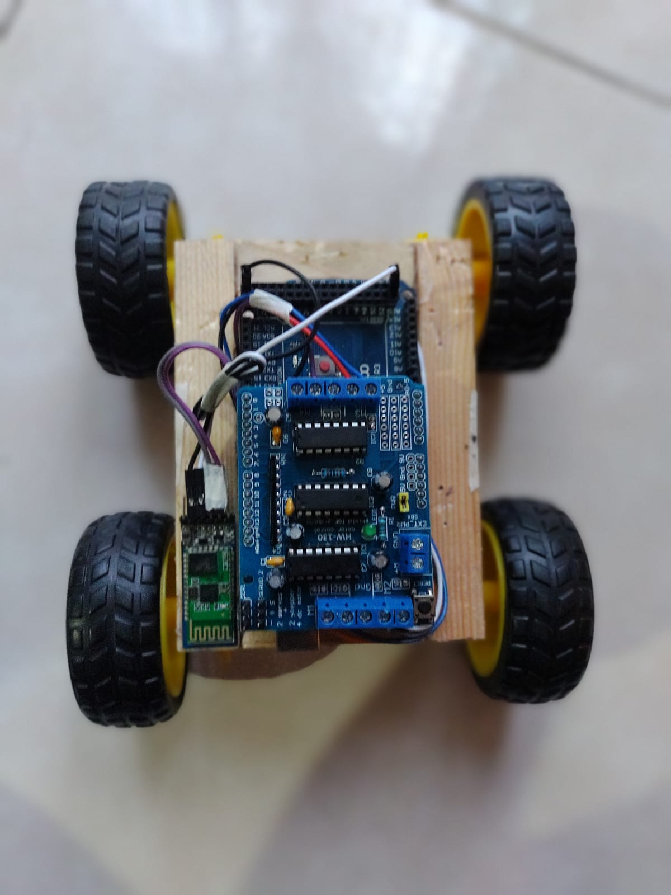
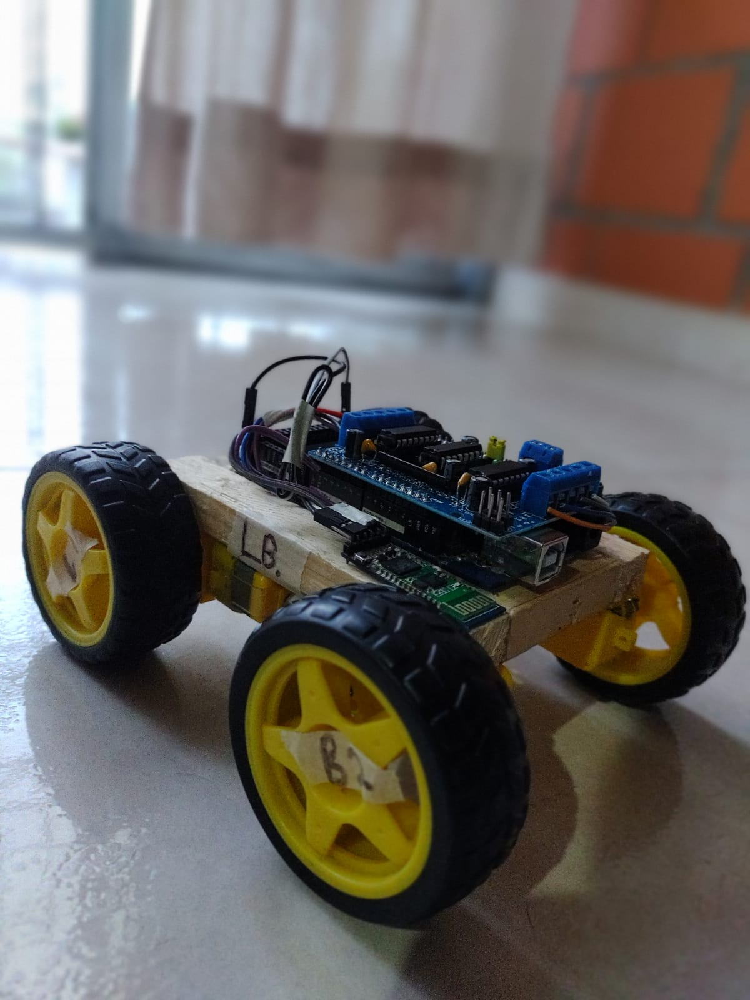
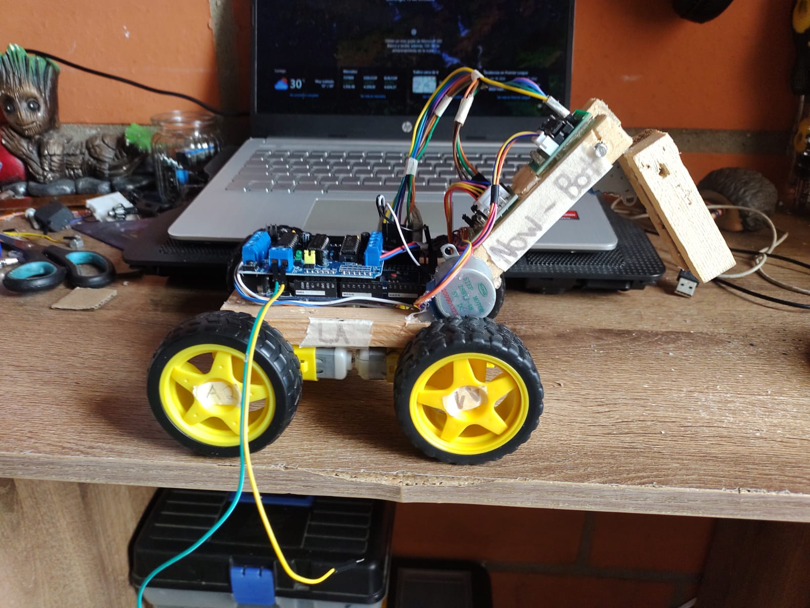

N-Bot es un robot diseñado para ayudar en la limpieza de los espacios públicos del municipio de Cartago, Valle del Cauca. Su función principal es la recolección de residuos metálicos que se encuentran dispersos en las calles y parques, contribuyendo a un ambiente más limpio y a la reducción de la contaminación por residuos no gestionados correctamente.
Este proyecto responde a la creciente preocupación en Cartago por la basura, especialmente los residuos metálicos, que pueden ser peligrosos para la población y afectan la estética del municipio. Con la ayuda de un imán, N-Bot puede recoger de manera eficiente estos residuos, evitando que se acumulen y afecten la salud de los ciudadanos.
Nuestro N-Bot no se queda aquí. A futuro planeamos implementar: